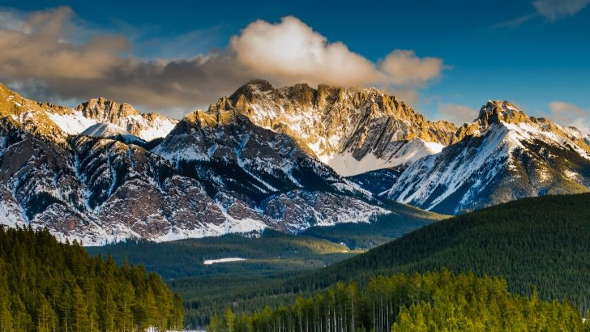

A mountain is a large landform that rises above the surrounding land in a limited area, usually in the form of a peak. A mountain is generally steeper than a hill. Mountains are formed through tectonic forces or volcanism. These forces can locally raise the surface of the earth.

High elevations
High elevations on mountains produce colder climates than at sea level. These colder climates strongly affect the ecosystems of mountains: different elevations have different plants and animals. Because of the less hospitable terrain and climate, mountains tend to be used less for agriculture and more for resource extraction and recreation, such as mountain climbing.
Everest
The highest mountain on Earth is Mount Everest in the Himalayas of Asia, whose summit is 8,850 m (29,035 ft) above mean sea level. The highest known mountain on any planet in the Solar System is Olympus Mons on Mars at 21,171 m (69,459 ft).